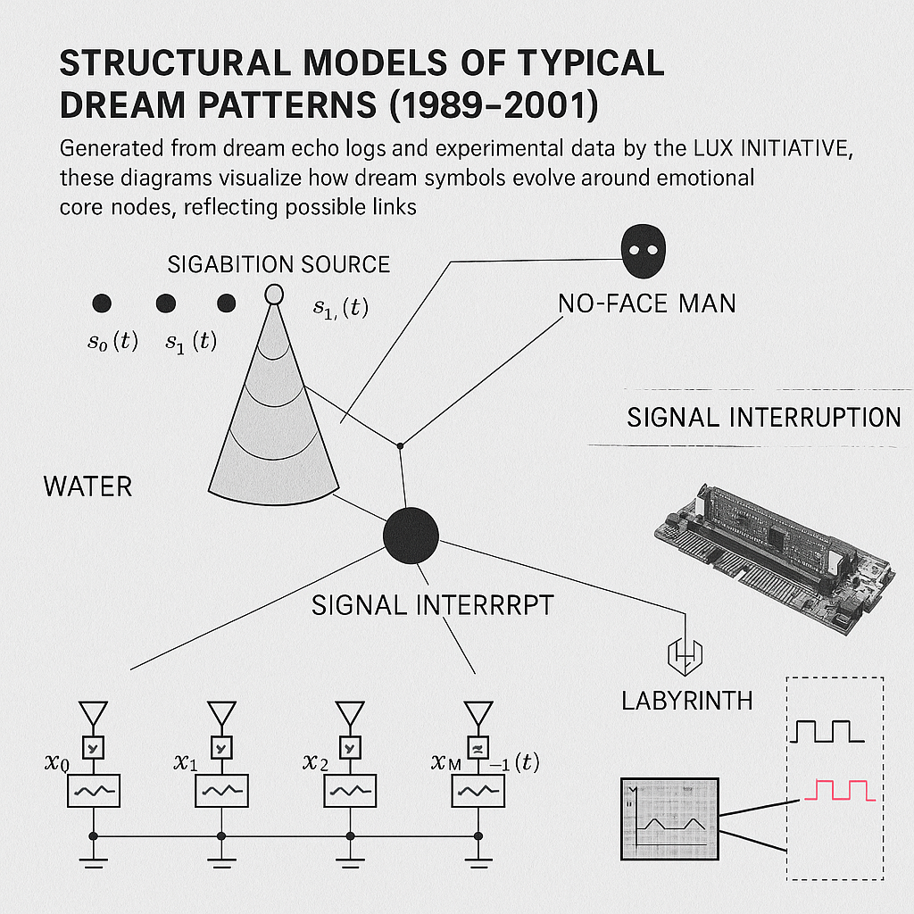
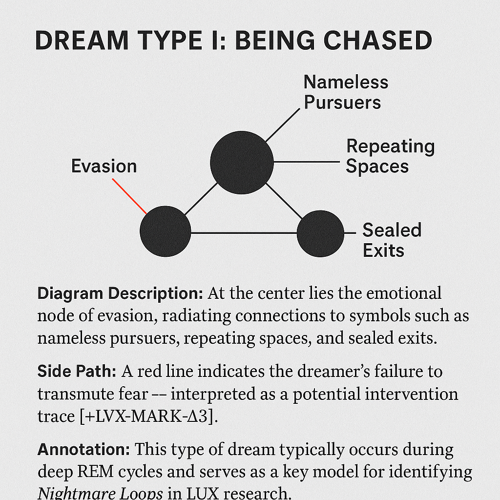
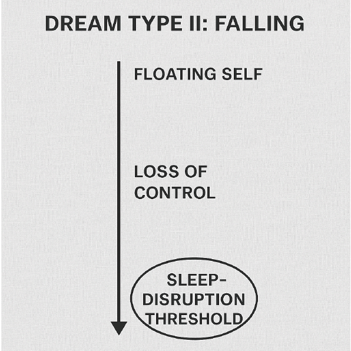
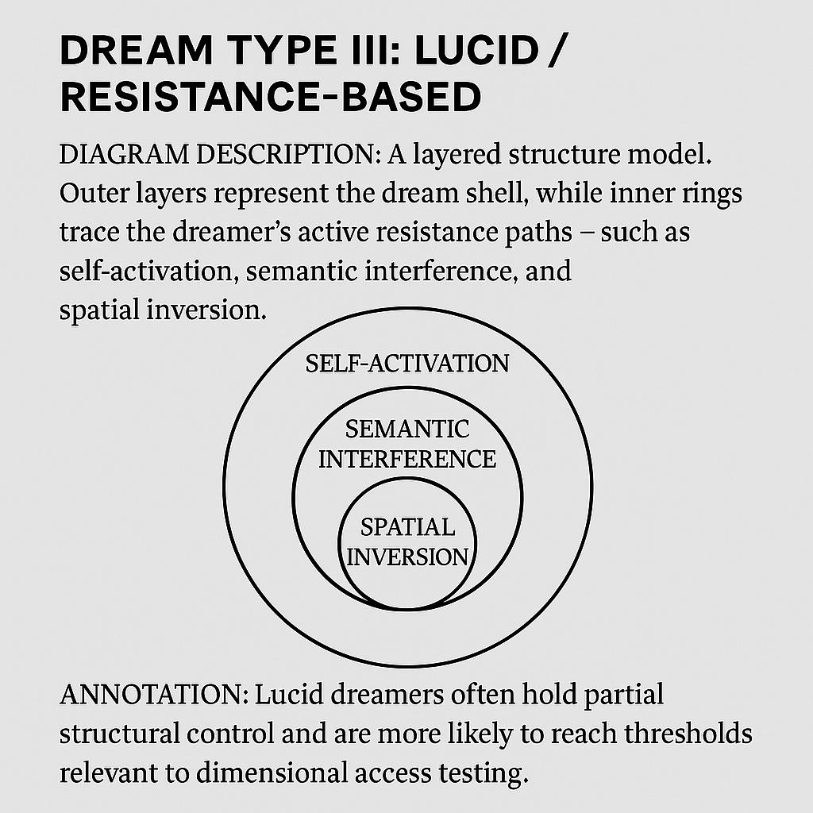

Dreams guard hidden secrets, memories are sometimes faded, and the soul drifts in subtle disorientation. Would you like to explore these hidden fragments to discover who you truly are?
LUX
INITIATIVE
INITIATIVE
Oneiric Analysis
© 1993–2001 LUX INITIATIVE • All rights reserved
Structural Models of Typical Dream Patterns (1989–2001)
Generated from dream echo logs and experimental data by the LUX INITIATIVE, these diagrams visualize how dream symbols evolve around emotional core nodes, reflecting possible links between the dreamer and external interference.


Dream Type I: Being Chased
Diagram Description: At the center lies the emotional node of evasion, radiating connections to symbols such as nameless pursuers, repeating spaces, and sealed exits.
Side Path: A red line indicates the dreamer's failure to transmute fear — interpreted as a potential intervention trace [+LVX-MARK-Δ3].
Annotation: This type of dream typically occurs during deep REM cycles and serves as a key model for identifying Nightmare Loops in LUX research.
Diagram Description: At the center lies the emotional node of evasion, radiating connections to symbols such as nameless pursuers, repeating spaces, and sealed exits.
Side Path: A red line indicates the dreamer's failure to transmute fear — interpreted as a potential intervention trace [+LVX-MARK-Δ3].
Annotation: This type of dream typically occurs during deep REM cycles and serves as a key model for identifying Nightmare Loops in LUX research.
LX-TYPE-A01

Dream Type II: Falling
Diagram Description: A vertical timeline diagram represents the dreamer descending from a floating self state into loss of control, ending in a sleep-disruption threshold.
Summary Insight: This pattern is often triggered in parallel with external interference events. 43% of such cases recorded by LUX occurred during signal shield failure intervals.
Diagram Description: A vertical timeline diagram represents the dreamer descending from a floating self state into loss of control, ending in a sleep-disruption threshold.
Summary Insight: This pattern is often triggered in parallel with external interference events. 43% of such cases recorded by LUX occurred during signal shield failure intervals.
LX-TYPE-B04

Dream Type III: Lucid / Resistance-Based
Diagram Description: A layered structure model. Outer layers represent the dream shell, while inner rings trace the dreamer’s active resistance paths — such as self-activation, semantic interference, and spatial inversion.
Annotation: Lucid dreamers often hold partial structural control and are more likely to reach threshold states relevant to dimensional access testing.
Diagram Description: A layered structure model. Outer layers represent the dream shell, while inner rings trace the dreamer’s active resistance paths — such as self-activation, semantic interference, and spatial inversion.
Annotation: Lucid dreamers often hold partial structural control and are more likely to reach threshold states relevant to dimensional access testing.
LX-TYPE-C08